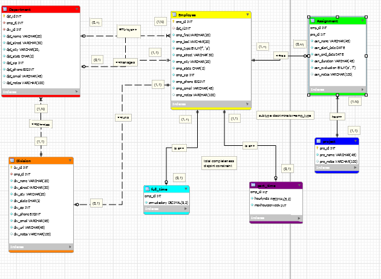

<!DOCTYPE html>
<html>
<link rel="stylesheet" href="style.css">
<head>
<title>
    Portfolio
</title>
<section id="splash-exp">
	<section id="overview">
	<div id="navbar">
        <div class="container">  <!-- container keeps everything aligned and centered no matter what the window size -->
            <ul  id="menu">
				<!-- button class provides button-like appearance and scrolling javascript (see bottom of html code) -->
				<li><a href="https://seanmichaelanderson.github.io/homepage" class="button">Homepage</a></li>
				<li><a href="https://seanmichaelanderson.github.io/experince" class="button">Experience</a></li>
				<li><a href="https://seanmichaelanderson.github.io/portfolio" class="button">Portfolio</a></li>
			</ul>
		</div> <!-- end container -->
	</div> <!-- end navbar -->
    <div id="container">
	
	</div> <!-- end container -->
</section>
        <div id="container">
			 <h1>Portfolio</h1>
		</div> <!-- end container -->
   
</section>
<section id="content">
        <div id="ERD">
           <h3>ERD Design</h3>
           <a href="https://seanmichaelanderson.github.io/ERD"></a>
           <li>I designed an ERD for a store that used a Specialization Hierarchy. I also put 10 entries into each entity and was forward-engineered</li>
           <li>My role was student in Database Design class.</li>
           <li>The main challenges were making sure the ERD was forward engineered properly, data were properly implemented, and making sure that the specialization hierarchy worked properly.</li>
           <li>The skills I learned were database design and proper database management.</li>
        </div>
</section>
<section id="content">
        <div id="Data">
           <hr color=#782F40>
           <h3>Data Library</h3>
           <a href="https://seanmichaelanderson.github.io/Data"></a>
           <li>Designed a data library for a soccer team with six entities with several variables. </li>
           <li>My role was student in Database Design class.</li>
           <li> The main challenges were putting in the proper information, using the correct number of rows and columns and putting the right domain information.</li>
           <li> The skills I learned were designing a data library, database design, and ERD design.</li>
        </div>
</section>
<section id="content">
         <div id="HTML">
             <hr color=#782F40>
            <h3>HTML</h3>
            <a href="http://seana1.sgedu.site/cgs2821/project_04/"> </a>
           <li> I designed websites in HTML in Web Design. I created one website about cybersecurity and the Internet of Things (IoT) which discussed the dangers of the lack of security on the IoT.</li>
           <li>My role was as a student in Intro to Web Design.</li>
           <li> The main challenges were creating the content brief and full of viable information, and designing the sections properly.</li>
           <li> The skills I learned were Html coding, web design, and web content creation.</li>
        </div>
</section>
<section id="content">
        <div id="CSS">
            <hr color=#782F40>
            <h3>CSS</h3>
            <a href="http://seana1.sgedu.site/cgs2821/project_11/"></a>
           <li>  I designed websites in HTML and CSS. The website was about Cybersecurity and the Internet of Things (IoT).</li>
           <li>My role was as a student in a web design class.</li>
           <li> The main challenges were adding CSS styling, adding containers, and further developing the design of the website and content.</li>
           <li> The skills I learned were CSS Styling, hosting websites, and color palettes.</li>
        </div>
</section>
</html>
</html>